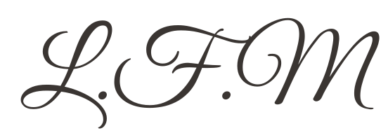
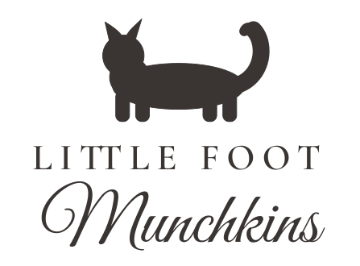
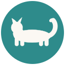

Logo options
Direction A is the chosen logo (decided 8 October 2026) and is what the landing page uses. Direction B stays here as the alternative in case you want to revisit it. Every file is outlined SVG in three inks (charcoal, teal, white-on-dark) plus a circular icon for social avatars and a favicon, so they open cleanly in any design tool or print shop.
A. Refined script wordmark Chosen
The script already on your photos, redrawn as a clean vector with ivy sprig flourishes. Single-ink for print and embroidery; the colour version is what the website uses.
In colour
On dark
Monogram and icon

monogram


B. Munchkin mark with two-tier lockup Alternative
A clean Munchkin silhouette, short legs and plume tail, over a serif "LittleFoot" and the script "Munchkins". The silhouette works alone as the icon.

On dark

Icon

128 px avatar


Palette
Whitewash #F7F3EC
Linen #EDE5D8
Ink #3A3532
Teal #2E8B8B
Blush #F0CFC0
Sage #9DAE98
Type
Great Vibes for the script wordmark and monogram
Cormorant Garamond for headings and the "LittleFoot" tier
Nunito for body text and buttons
All three are free on Google Fonts. The logo SVGs are outlined, so they need no font installed.